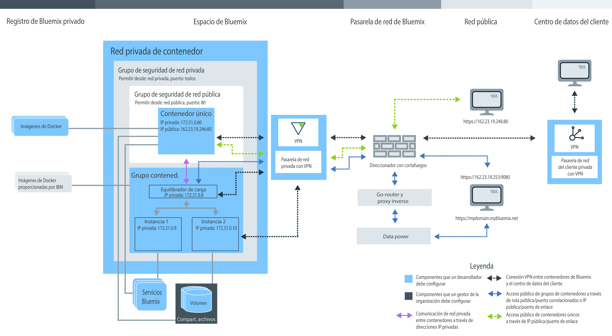

Planificación para utilizar contenedores únicos y escalables
• Gestión de su organización de Bluemix para contenedores individuales y grupos de contenedores escalables
• Configuración de un espacio de nombres para el registro privado de Bluemix
• Tipos de cuentas de Bluemix y de cuotas disponibles
• Configuración de almacenamiento permanente
• Creación de contenedores individuales y de grupos de contenedores escalables en el servicio IBM Bluemix Container
• GUI, CLI o API REST de Bluemix
• Imágenes privadas, de Docker Hub y públicas de IBM
• Valores de red de contenedor privado
• Valores de red pública
• Integración de servicios de Bluemix
• Opciones de almacén de datos permanente
• Tipos de contenedor
• Opciones de supervisión y de registro
Información sobre los roles de usuario
Los contenedores se gestionan mediante gestores de la organización y desarrolladores de contenedores. La siguiente imagen muestra una configuración de contenedor de ejemplo de una organización y resalta los componentes que puede establecer el gestor de la organización o el desarrollador del contenedor. Componentes de 
Revise las subsecciones de este tema para buscar información sobre cada componente, y la decisión y las configuraciones que puede adoptar. Algunas de estas configuraciones no pueden cambiarse una vez que se ha creado un contenedor. Conocer estas configuraciones de antemano puede ayudarle a garantizar que todos los recursos como, por ejemplo, la memoria, el espacio de disco y las direcciones IP, estén disponibles para el equipo de desarrollo, así como para maximizar el uso de su cuota de organización.Gestión de la organización de Bluemix para IBM Bluemix Container Service
En Bluemix, puede utilizar organizaciones para permitir la colaboración entre miembros de equipos y facilitar la agrupación lógica de recursos de nube en un proyecto. A cada organización se le asigna un gestor de organización que es responsable de configurar los entornos de desarrollo (espacios) y de otorgar a los miembros del equipo acceso a recursos de nube que son necesarios para crear satisfactoriamente contenedores para sus apps. Esta configuración incluye la asignación de direcciones IP públicas, almacenamiento de datos y memoria de contenedor. Como gestor de organización también puede ver la cuota y el uso actual de recursos de nube, y ajustarlos según sea necesario.
- Asigne gestores de la organización otorgando a un usuario el rol gestor dentro de la organización.
- Asigne creadores de contenedores otorgando al usuario un rol desarrollador o auditor dentro del espacio.
Definición del espacio de nombres de la organización para el registro privado de Bluemix
Para guardar y gestionar imágenes privadas correspondientes a IBM Bluemix Container Service, cada organización debe configurar su propio registro privado de imágenes de Docker en Bluemix. Este nombre del registro privado se denomina un espacio de nombres y debe ser exclusivo dentro de Bluemix.
Considere las siguientes reglas al elegir un espacio de nombres para la organización.
- El espacio de nombres debe ser exclusivo en Bluemix.
- El espacio de nombres puede tener una longitud de 4 a 30 caracteres.
- El espacio de nombres debe empezar por al menos una letra o un número.
- El espacio de nombres solamente puede contener letras en minúsculas, números o subrayados (_).
Desde la interfaz gráfica de usuario (GUI) de Bluemix, siga estos pasos.
Desde la CLI, ejecute el mandato siguiente después de iniciar la sesión en el IBM Bluemix Container Service:
Recuperación del espacio de nombres para la organización
Si ya se ha establecido un espacio de nombres para la organización, puede recuperarla desde la interfaz gráfica de usuario o la CLI de Bluemix.
Desde la interfaz gráfica de usuario (GUI) de Bluemix, siga estos pasos.
Desde la CLI, inicie la sesión en el servicio de IBM Bluemix Container Service y ejecute el siguiente mandato.
Cuota y cuentas de Bluemix
Cada organización de Bluemix tiene un valor preestablecido para la memoria de contenedor, direcciones IP públicas, comparticiones de archivos y el número de servicios que se comparten entre todos los espacios de una organización. Estos valores prestablecidos se denominan cuota.
Tipos de cuenta de Bluemix
| Tipo de cuenta | Descripción |
|---|---|
| Prueba gratuita | No hay disponibles pruebas gratuitas para los contenedores únicos y escalables. Obtenga más información acerca de la gestión de clústeres y migre a Kubernetes en IBM Bluemix Container Service en Bluemix Public. |
| Pago según uso | Si se registra para una cuenta Pago según uso, sólo pagará por los recursos de Bluemix que utilice. |
| Suscripción | Si se registra para una cuenta Suscripción, se compromete a una cantidad de gasto mínimo al mes y recibirá un descuento de suscripción que se aplica a dicho cargo mínimo. También puede pagar cualquier uso que exceda la cantidad de gasto mínimo. |
| Bluemix dedicado | Con Bluemix dedicado, debe registrarse para un plazo mínimo de un año. Lo que deberá abonar cada mes durante dicho plazo dependerá de los servicios dedicados que desee, más una cuenta de suscripción que le ofrece acceso a todos los servicios públicos. |
| Bluemix local | Con Bluemix local, debe registrarse para un plazo mínimo de un año. Lo que deberá abonar cada mes durante dicho plazo dependerá de los servicios locales que desee, más una cuenta de suscripción que le ofrece acceso a todos los servicios públicos. |
Cuota predeterminada para las cuentas de pago
| Recurso | Límites de cuota de las cuentas de pago |
|---|---|
| Direcciones IP públicas | 64 |
| Memoria de contenedor | 64 GB Nota: Cada contenedor del espacio contribuye al uso de la cuota, ya se esté
ejecutando o no el contenedor. Para liberar memoria, debe eliminar contenedores no utilizados.
|
| Comparticiones de archivos | 10 comparticiones de archivos |
| Contenedores y grupos de contenedores | Número ilimitado Nota: El tamaño del contenedor y de los grupos de contenedores cuenta para el límite de memoria de contenedor, pero no está limitado a un número de contenedores específico.
|
| Imágenes | 25 Nota: Las imágenes de IBM no cuentan en lo que se refiere al límite de imágenes del registro de Bluemix privado.
|
| Espacios | Número ilimitado Nota: Cada espacio requiere como mínimo 2 direcciones IP públicas y 2 GB de memoria de contenedor que se asignan automáticamente al iniciar sesión
en un espacio nuevo e intentar utilizarlo con el IBM
Bluemix Container Service. Estos recursos cuentan para la cuota,
pero no está limitado a un número de espacios específico.
|
Asignación de cuota en un espacio
- En los detalles de la cuenta, en Gestionar organizaciones, seleccione una organización.
- En la sección de cuota, vea los detalles para los contenedores.
- En la tabla Asignación de cuota, cambie la cuota asignada para el espacio pulsando el botón Editar.
- Guarde los cambios pulsando el botón Guardar.
Consejos para maximizar el uso de la cuota
- Asegúrese de que elimina los contenedores que ya no están en uso de modo que sus configuraciones no se tengan en cuenta en la cuota. Para obtener más información, consulte Eliminación de contenedores únicos, Eliminación de grupos de contenedores y Eliminar una app de multicontenedor.
- No enlace una dirección IP pública al contenedor cuando el contenedor no debe estar accesible desde Internet.
- Para reducir el uso de direcciones IP públicas, piense en utilizar grupos de contenedores en lugar de un único contenedor. Los grupos de contenedor utilizan una ruta para el acceso público que no está sujeto a la cuota de direcciones IP. Para obtener más información, consulte Ejecución de servicios a largo plazo como grupos de contenedor desde la interfaz gráfica de usuario de Bluemix.
Almacenamiento de datos permanentes
El gestor de organización puede crear comparticiones de archivos con tamaño de almacenamiento e IOPS para satisfacer las necesidades de almacenamiento del espacio. Las comparticiones de archivos pueden suministrarse en tamaños de 20 GB a 12 TB y en IOPS por GB de 0,25, 2 o 4. El tamaño de la compartición de archivos en relación con el número de impactos de IOPS que agilizan que los datos se puedan leer de y grabar en el volumen de contenedor.
Creación de los contenedores con IBM Bluemix Container Service en Bluemix
Para crear contenedores que ejecutan la app con IBM Bluemix Container Service en Bluemix, debe tener asignados derechos de desarrollador para un espacio de organización. Como desarrollador de apps, es importante saber cuántos componentes de contenedor están relacionados y cómo puede cambiar la configuración de un contenedor para satisfacer los requisitos funcionales y no funcionales de la app.
La GUI de Bluemix, la línea de mandatos y la API REST
Cuando está pensando en trabajar con IBM Bluemix Container Service, puede utilizar la interfaz gráfica de usuario (GUI) de Bluemix, instalar la interfaz de línea de mandatos (CLI), o enviar solicitudes HTTP a la API REST para acceder a IBM Bluemix Container Service.
La GUI de Bluemix y la CLI se pueden usar para realizar la mayoría de las tareas de IBM Bluemix Container Service. Sin embargo, hay tareas que pueden realizarse solamente a través de la interfaz gráfica de usuario o la CLI de Bluemix. Por lo tanto, esté preparado para utilizar los dos para gestionar sus contenedores.
Si no quiere usar la GUI ni la CLI de Bluemix, puede enviar solicitudes HTTP directamente al servidor de IBM Bluemix Container Service API para gestionar sus contenedores con REST.
La siguiente tabla muestra todas las tareas relacionadas con contenedores que requieren la GUI de Bluemix, la CLI de IBM Bluemix Container Service o la API REST. Las tareas que no aparecen aquí las pueden realizar todos los métodos.| Tarea | interfaz gráfica de usuario (GUI) | CLI | API |
|---|---|---|---|
| Revisar vulnerabilidades de imagen |  |
 |
|
| Enviar imágenes al registro | |
|
|
| Extraer imágenes del registro | |
|
|
| Copiar imágenes de Docker Hub | |
|
|
| Cambiar asignación de cuota | |
|
|
| Recuperar organización y cuota específica de espacio | |
|
|
| Ver información de registro detallada | |
|
|
| Especificar más registros | |
|
|
| Personalizar registros | |
|
|
| Iniciar sesión en contenedor en ejecución | |
|
|
| Usar Docker Compose | |
|
|
| Listar volúmenes de un espacio | |
|
|
| Escribir archivos en un volumen | |
|
|
| Suprimir un volumen | |
|
|
| Recuperar mensajes de sistema | |
|
|
Instalación de la CLI
Instale y configure la CLI de IBM Bluemix Container Service para gestionar sus contenedores desde la CLI.
Gestión de contenedores a través de la API REST
Utilice la API de IBM Bluemix Container Service para trabajar con contenedores únicos y grupos de contenedores utilizando REST.
Imágenes públicas de IBM, de Docker Hub y privadas
Una imagen de contenedor es la base para cada contenedor que pueda crear. Se crea una imagen a partir de Dockerfile, que es un archivo que contiene instrucciones para crear la imagen y crear artefactos, como una app, la configuración de la app y sus dependencias. Piense en una imagen de contenedor como un archivo ejecutable (.exe o .bin). Tan pronto se ejecuta el archivo de app ejecutable, se crea una instancia de la app. Al ejecutar un contenedor, cree una instancia de contenedor a partir de la imagen. Las imágenes de contenedor se almacenan en el registro de Bluemix privado y pueden añadirse únicamente desde la CLI. Cada imagen de contenedor que desea utilizar debe estar en un registro para poder crear un contenedor a partir de la misma.
- Imágenes públicas de IBM
- Empiece con una de las imágenes públicas de IBM suministradas por IBM Bluemix Container Service, como, por ejemplo, las imágenes de IBM Liberty e IBM Node para probar las características de IBM Bluemix Container Service. A continuación, puede utilizar una de estas imágenes como imagen padre, modificar el Dockerfile y crear su propia imagen con el código de app en la misma.
- Imágenes de Docker Hub
- Copie imágenes directamente de Docker Hub en el registro de Bluemix privado o extraiga una imagen de Docker Hub, modifíquela localmente y, a continuación, compílela directamente en el registro.
- Crear su propia imagen
- Si tiene imágenes de contenedor que ya utiliza en el entorno de Docker local, puede enviarlas por push al registro de Bluemix privado para utilizarlas en IBM Bluemix Container Service. También puede crear su propio Dockerfile, compilarlo, probarlo localmente y, a continuación, enviarlo por push al registro de imágenes privado.
Visualización de imágenes en el registro de imágenes privado
Puede ver todas las imágenes de contenedor que están disponibles en el registro de imágenes de Bluemix privado utilizando la GUI o la CLI de Bluemix.
- Desde la GUI de Bluemix, seleccione el catálogo y, a continuación, Contenedores. Puede ver imágenes suministradas por IBM e imágenes previamente enviadas al registro de Bluemix privado.
- Desde la CLI, ejecute las bx icimágenes.
Revisión de vulnerabilidades de imágenes
Cuando se añaden imágenes al registro de Bluemix privado, Vulnerability Advisor las explora automáticamente frente a las políticas estándar establecidas por el gestor de la organización y una base de datos de problemas de Ubuntu conocidos. Vulnerability Advisor comprueba los paquetes de inventario, las configuraciones, los puertos abiertos y los metadatos de Docker. Una vez finalizada la exploración, puede revisar una lista de posibles vulnerabilidades y corregirlas según sea necesario antes de utilizar la imagen en un contenedor. En función de las políticas establecidas por el gestor de organización, el despliegue de un contenedor desde dicha imagen puede bloquearse, o se muestra un aviso al usuario.
- Para ver las vulnerabilidades de una imagen, consulte Revisión de un informe de imagen.
- Para configurar políticas personalizadas en su organización, consulte Revisión de las políticas de la organización.
Sugerencias de Dockerfile para impedir que un contenedor se apague
IBM Bluemix Container Service ofrece muchas características para mantener los contenedores seguros y gestionar los recursos de nube del usuario. Dependiendo de su app, podría ser necesario añadir configuraciones extra al Dockerfile para garantizar que sus contenedores locales puedan ejecutarse satisfactoriamente en Bluemix.
- Prepararse para los retrasos de red
- Cuando se inicia un contenedor, IBM Bluemix Container Service configura la red de contenedor privado y asigna una dirección IP privada al contenedor. Este proceso puede tardar unos segundos. Si la app requiere una conexión de red activa al iniciarse la app, garantiza que la interconexión de IBM Bluemix Container Service haya finalizado antes añadiendo un mandato sleep al Dockerfile.
- Usar mandatos de larga ejecución
- Para mantener un contenedor en ejecución, es necesario incluir al menos un proceso de larga ejecución en la imagen del contenedor. Por ejemplo, echo "Hello world" es un proceso de corta ejecución. Si no se especifica otro mandato en la imagen, el contenedor concluye una vez que se ha ejecutado el mandato. Por ejemplo, para transformar el mandato echo "Hello world" en un proceso de larga ejecución, puede crear un bucle del mismo varias veces o incluir el mandato echo en otro proceso de larga ejecución dentro de la app.
Valores de red de contenedor privado en IBM Bluemix Container Service
Una red privada de contenedor crea un entorno aislado y seguro para los contenedores únicos y los grupos de contenedores que se ejecutan en un espacio. Los contenedores que están conectados a la misma red privada pueden enviar y recibir datos de otros contenedores en la red privada, utilizando las direcciones IP privadas. Los contenedores no están públicamente disponibles hasta que se enlazan un puerto público y una dirección IP pública para contenedores únicos o una ruta pública para grupos de contenedores.
- Valores de red privada predeterminada de IBM Bluemix Container Service
- En Bluemix, cada espacio ya se proporciona con una red privada de contenedor que se aplica a los valores de red predeterminados de IBM Bluemix Container Service. Estos valores incluyen la configuración automática de un Grupo de seguridad de red privada predeterminado que permite la comunicación de red privada entre contenedores y grupos de contenedores utilizando direcciones IP privadas. Al crear un contenedor o un grupo de contenedores en un espacio, se conectan automáticamente a la red privada de IBM Bluemix Container Service predeterminada y se les asigna una dirección IP privada dese la subred 172.31.0.0/16. Después de asignar una dirección IP privada, todos los contenedores de la misma red pueden comunicarse de forma segura en todos los puertos de contenedor utilizando la dirección IP privada del contenedor único, o si se utiliza un grupo de contenedores, la dirección IP privada del equilibrador de carga del grupo. No es necesaria ninguna correlación de puertos de contenedor con un puerto de host.
- Red privada virtual para conectar los contenedores a un centro de datos corporativo
- Conectar de forma segura los contenedores únicos y los grupos de contenedores en una red de contenedores privada en Bluemix con un centro de datos corporativo utilizando el servicio IBM® Virtual Private Network (VPN). IBM
VPN proporciona un canal de comunicaciones de extremo a extremo seguro sobre internet que está basado en la suite de protocolos
Internet Protocol Security (IPsec) estándar del sector. El protocolo IPsec ofrece la autenticación de iguales a nivel de red, la integridad de datos y la confidencialidad de datos cifrando los paquetes que se intercambian entre los puntos finales VPN. Para configurar una conexión segura entre los contenedores en Bluemix y un centro de datos corporativo, debe tener instalados una pasarela VPN IPsec o un servidor SoftLayer en el centro de datos local. Con el servicio de
IBM
VPN, puede configurar una pasarela VPN por espacio y definir hasta 16 conexiones en distintos destinos.
Para configurar una conexión VPN segura en los contenedores de Bluemix, consulte IBM VPN.
Consejos para gestionar los retrasos de red al iniciar un contenedor
Cuando se inicia un contenedor, IBM Bluemix Container Service configura la red de contenedor privada, expone puertos de contenedor y asigna una dirección IP privada al contenedor. Este proceso puede tardar unos segundos. Si la app requiere una conexión de red activa en el momento en que se inicia la app, es posible que la red privada de contenedor todavía no esté configurada, lo que puede causar que la app se bloquee. Para garantizar que la interconexión de IBM Bluemix Container Service haya finalizado antes de que se inicie la app, plantéese implementar una de las siguientes soluciones para gestionar los retrasos.
- Añada un mandato sleep al Dockerfile que se ejecute al iniciar el contenedor.
En el siguiente ejemplo de Dockerfile, el contenedor espera 60 segundos antes de iniciar la app.
FROM sdelements/lets-chat:latest CMD (sleep 60; npm start) - Ajuste el código de app para comprobar si hay una conectividad de red activa, por ejemplo, haciendo ping a una dirección IP pública antes de que se inicie la app. Si no puede hacer ping a una dirección IP, suspenda la ejecución durante unos pocos segundos e inténtelo de nuevo. Si la dirección IP puede resolverse, inicie la app.
Determinación de los valores de la red pública
De forma predeterminada, cada contenedor único y grupo de contenedores en IBM Bluemix Container Service está disponible para la red privada. Sin embargo, la app puede requerir accesibilidad desde Internet, o desea acceder a contenedores en otros espacios de la organización. En estos casos, debe exponer el contenedor al público. En función del tipo de contenedor que elija, existen distintas formas de hacer que un contenedor esté disponible para el público.
Contenedores únicos y valores de la red pública de Docker Compose
A todos los contenedores únicos que cree en su espacio se les asigna una dirección IP privada que puede utilizar para acceder a los contenedores únicamente desde la red privada. La comunicación de red privada está protegida por el grupo de seguridad de red privada predeterminada que no permite ningún tráfico de red a o desde una red pública. Si desea hacer que la app esté disponible para la red pública, debe exponer un puerto público y enlazar una dirección IP pública a su contenedor.
Deben solicitarse direcciones IP públicas para que un espacio esté enlazado con un contenedor. Al solicitar una dirección IP pública, se asigna al espacio una aleatoria de la agrupación de direcciones IP públicas. Mientras se asigna a un espacio, la dirección IP no cambia. Para enlazar una dirección IP pública a un contenedor, también debe exponer un puerto HTTP usando la opción -p en el mandato bx ic run. Al exponer un puerto, se crea un grupo de seguridad de red pública para el contenedor que le permite enviar y recibir datos públicos únicamente en el puerto expuesto. Los demás puertos públicos están cerrados y no pueden utilizarse para acceder a la app desde Internet.
El número de direcciones IP públicas que están disponibles para un espacio dependerá de la cuota de su organización.
bx ic ips- No hay disponible ninguna dirección IP pública en el espacio
- Salida de CLI:
Dirección IP ID de contenedor - Mis opciones:Solicite una nueva dirección IP pública y enlácela al contenedor.
bx ic ip-requestbx ic ip-bind <IP_ADDRESS> <CONTAINER>
- Salida de CLI:
- Hay una dirección IP pública disponible en el espacio y no está enlazada a un contenedor
- Salida de CLI:
Dirección IP ID de contenedor 192.0.2.56 - Mis opciones:Enlace la dirección IP pública al contenedor.
bx ic ip-bind <IP_ADDRESS> <CONTAINER>
- Salida de CLI:
- Hay una dirección IP pública disponible en el espacio pero ya está enlazada a un contenedor
- Salida de CLI:
Dirección IP ID de contenedor 192.0.2.56 d7b4a167-8e51-4b16-b591-1a17cb7ee41f - Mis opciones:
- Elimine el enlace de una dirección IP ya enlazada de un contenedor y enlácela a un nuevo contenedor.
bx ic ip-unbind <IP_ADDRESS> <CONTAINER>bx ic ip-bind <IP_ADDRESS> <CONTAINER> - Solicite una nueva dirección IP pública y enlácela al contenedor.
bx ic ip-requestbx ic ip-bind <IP_ADDRESS> <CONTAINER>
- Elimine el enlace de una dirección IP ya enlazada de un contenedor y enlácela a un nuevo contenedor.
- Salida de CLI:
Valores de la red pública del grupo de contenedores
Para que su grupo de contenedores sea accesible desde Internet, debe exponer un puerto y enlazar una ruta o dirección IP públicas a él.
- Ruta pública con dominio predeterminado
- Una ruta pública consta de un host y un nombre de dominio, y compone todo el URL público que se escribe en el navegador web para acceder al grupo de contenedores. Cada ruta debe ser exclusiva en
Bluemix.
Puede elegir un nombre de host para su ruta, como por ejemplo mycontainerhost durante la creación del contenedor. El dominio del sistema predeterminado es AppDomainName y ya proporciona un certificado SSL, de modo que puede acceder al grupo de contenedores con HTTPS sin ninguna configuración adicional.
Ejemplo: https://mycontainerhost.AppDomainName
Nota: Para utilizar una ruta pública, debe exponer un puerto HTTP para el grupo de contenedores durante la creación. Los puertos no HTTP no pueden exponerse públicamente. Puede exponer solamente un puerto público por grupo de contenedores. No se da soporte a varios puertos públicos para un grupo de contenedores. - Ruta pública con dominio personalizado
- Si desea utilizar su propio dominio personalizado en lugar del dominio predeterminado AppDomainName, debe registrar el dominio personalizado en un servidor DNS público, configurar el dominio personalizado en Bluemix y, a continuación, correlacionar el dominio público con el dominio del sistema
Bluemix en el servidor DNS público. Después de que el dominio personalizado se correlacione con el dominio del sistema Bluemix, las solicitudes para este dominio personalizado se direccionan a su aplicación en Bluemix. Cuando cree un dominio personalizado, no incluya caracteres de subrayado (_) en el nombre de dominio.
Para crear un dominio personalizado, consulte Creación y uso de un dominio personalizado.
Para que el dominio personalizado sea seguro, cargue un certificado SSL para poder acceder al grupo de contenedores con HTTPS.
- Dirección IP pública
- También puede enlazar una dirección IP al crear un grupo de contenedores con la línea de mandatos. Solamente puede enlazar una ruta pública o una dirección IP flotante a un contenedor, no las dos. Para eliminar una dirección IP de un grupo de contenedores, debe eliminar el grupo de contenedores y volver a crear el grupo.Ejemplo de crear un grupo de contenedores con una dirección IP pública:
bx ic group-create -p 9080 --ip 192.0.2.56 --name my_container_group registry.DomainName/ibmliberty
Integración de servicios de Bluemix para utilizarlos con contenedores
Bluemix ofrece varios servicios que puede utilizar con IBM Bluemix Container Service para ofrecer prestaciones adicionales a la app o para simplificar la implementación de la app y la gestión del contenedor.
- En la interfaz de usuario de Bluemix, seleccione el Catálogo de Bluemix.
- En la CLI, ejecute el mandato cf marketplace.
Para encontrar información sobre servicios que puedan ayudarle a gestionar los contenedores, consulte Integración de servicios con contenedores únicos y escalables.
Opciones de almacén de datos permanentes
Decide dónde almacenar los datos que la app crea o los archivos que la app requiere ejecutar.
| Opciones de almacenamiento de datos | Descripción | Cantidad de datos que pueden almacenarse está limitada por |
|---|---|---|
| Opción 1: Almacenar los datos dentro de un contenedor durante el tiempo de ejecución | Con esta opción, los datos de app no persisten. Los datos están disponibles para el contenedor solamente durante el tiempo de ejecución. Cuando se vuelve a crear un contenedor, todos los datos se pierden. | Tamaño del contenedor |
| Opción 2: Almacenar los datos en un volumen de contenedor | Cuando monte un volumen en Docker, este se montará en el sistema de archivos local. En IBM
Bluemix Container Service, el acceso al
host de cálculo está restringido, por lo que no puede montar directorios de host en un contenedor. En su lugar,
los volúmenes de ámbito de la organización
se utilizan para la persistencia de datos entre los reinicios del contenedor. Los volúmenes se alojan en comparticiones de archivos aisladas que almacenan de forma segura datos de apps y gestionan el acceso y el permiso a los archivos. Debido a este aislamiento, se debe otorgar a los usuarios que no sean root del contenedor permiso de grabación sobre el volumen montado. Con esta opción, puede persistir y acceder a datos entre reinicios de contenedor, y compartir datos entre contenedores en un espacio. Cuando se suprime un contenedor, no se elimina el volumen asociado. Nota: Para montar un volumen en un contenedor, debe crear uno primero; consulte Crear un volumen con la GUI de Bluemix.
|
Tamaño de la compartición de archivos que aloja el volumen |
| Opción 3: Conecte el contenedor a una base de datos local | Con esta opción, puede persistir y acceder a los datos de una base de datos in situ existente usando una conexión VPN segura entre los contenedores de la nube y su entorno local. | El espacio en disco que está disponible para la base de datos local |
| Opción 4: Enlazar un servicio de base de datos de Bluemix con el contenedor. | Con esta opción, puede persistir y acceder a datos utilizando un servicio de base de datos que está enlazado al contenedor en la nube. La mayoría de servicios de base de datos de Bluemix proporcionan espacio en disco para una cantidad de datos pequeña sin coste, para así poder probar sus características. | Servicio de base de datos y plan que elija |
Acceso de un usuario no root a volúmenes de contenedor de Bluemix
Para IBM Bluemix Container Service, la característica de espacio de nombres de usuario está habilitada para Docker Engine. Los espacios de nombres de usuario proporcionan aislamiento de modo que el usuario root del contenedor obtenga acceso a otros contenedores o al host de cálculo. Sin embargo, los volúmenes están en comparticiones de archivos NFS que son externas para los hosts de cálculo del contenedor. Los volúmenes están configurados para reconocer el usuario root en el contenedor, pero debido a que los volúmenes son externos con relación al contenedor, no reconocen los espacios de nombres de usuario.
Para algunas aplicaciones, el único usuario dentro de un contenedor es el usuario root. Sin embargo, muchas aplicaciones especifican un usuario no root que escribe en la vía de acceso de montaje del contenedor. Si está diseñando una aplicación con un usuario no root que requiere permiso de escritura para el volumen, debe añadir los siguientes procesos al script de punto de entrada y al archivo Docker:
- Cree un usuario no root.
- Añada temporalmente el usuario al grupo raíz.
- Cree un directorio en la vía de acceso de montaje con los permisos de usuario correctos.
Para obtener más información, consulte creación de su propio archivo Docker con los permisos adecuados para usuarios no root.
Tipos de contenedor
Antes de crear un contenedor con IBM Bluemix Container Service, decida sobre el tipo de contenedor que necesita. IBM Bluemix Container Service ofrece distintos enfoques para crear contenedores en la nube. El enfoque que elija dependerá de los requisitos y dependencias de la app que se ejecuta en el contenedor.
Contenedor único
Un contenedor único en IBM Bluemix Container Service es parecido a un contenedor que se crea en el entorno de Docker local. Los contenedores únicos es una buena forma de empezar con IBM Bluemix Container Service y obtener información sobre cómo funcionan los contenedores en IBM Cloud y las características que IBM Bluemix Container Service proporciona. También puede utilizar contenedores únicos para ejecutar pruebas de app simples o durante el proceso de desarrollo de una app. Puesto que un contenedor único se puede reiniciar y no está pensado para alojar un programa de larga ejecución, debe utilizar un grupo de contenedores para cualquier aplicación que requiera alta disponibilidad.
- El tamaño de la imagen tiene un impacto significativo. Cuando más pequeña sea la imagen, más rápido será el despliegue.
- Tras unas pocas primeras veces en las que se despliega una imagen, las velocidades de despliegue mejoran. Al principio, la imagen debe descargarse en el registro en el host. Los despliegues subsiguientes son más rápidos.
- La configuración de red puede tardar unos minutos.
- Un contenedor único se despliega más rápidamente que un grupo de contenedores debido a la configuración del direccionamiento de los grupos.
- Los despliegues con contenedores enlazados pueden no ser tan rápidos como otros despliegues debido a las conexiones que deben realizarse.
Para crear un contenedor único desde la interfaz gráfica de usuario de Bluemix, consulte Ejecución de tareas a corto plazo como contenedores únicos.
Para crear un contenedor único desde la CLI, consulte Ejecución de tareas a corto plazo como contenedores únicos con la interfaz de línea de mandatos (CLI).
Grupos de contenedores
Un grupo de contenedores consta de varios contenedores únicos que se crean a partir de la misma imagen de contenedor y como consecuencia están configurados de la misma forma.
Un grupo de contenedores ofrece más opciones sin ningún coste para que su app esté altamente disponible.
- Equilibrio de carga incorporado
- Antiafinidad para dispersar instancias de grupos de contenedores entre varios nodos de cálculo físicos
- Recuperación automática de instancias de grupos de contenedores erróneas
- Escalado automático de instancias de grupos de contenedor basado en el uso de la CPU y de la memoria
- Cree un segundo grupo de contenedores dentro del mismo espacio.
- Disperse grupos de contenedores por varios espacios utilizando zonas de disponibilidad de IBM Bluemix Container Service.
- Disperse grupos de contenedores por varias regiones de Bluemix.
- El tamaño de la imagen tiene un impacto significativo. Cuando más pequeña sea la imagen, más rápido será el despliegue.
- Tras unas pocas primeras veces en las que se despliega una imagen, las velocidades de despliegue mejoran. Al principio, la imagen debe descargarse en el registro en el host. Los despliegues subsiguientes son más rápidos.
- La configuración de red puede tardar unos minutos.
- Un contenedor único se despliega más rápidamente que un grupo de contenedores debido a la configuración.
- Un grupo de contenedores que no está asociado a una ruta se despliega más rápidamente que uno con una ruta.
- Los grupos de contenedores que no tienen habilitado la antiafinidad son más rápidos que los grupos de contenedores con antiafinidad. Con antiafinidad, los números de host que se especifican deben descargar cada uno las capas de imágenes.
Para crear un grupo de contenedores desde la interfaz gráfica de usuario de Bluemix, revise el tema Ejecutar un grupo de contenedores desde la interfaz gráfica de usuario de Bluemix.
Para crear un grupo de contenedores desde la CLI, consulte Ejecutar un grupo de contenedores desde la CLI.
Equilibrio de carga para un grupo de contenedores
Los grupos de contenedores proporcionan equilibrio de carga incorporado que direcciona el tráfico entrante uniformemente (rotativa) a las instancias de contenedor en el grupo. Cuando se crea un grupo de contenedores o se añaden instancias a un grupo existente, el equilibrio de carga de habilita tanto si se añaden instancias manualmente o se vuelve a crear una instancia durante el proceso de recuperación automática.


- A : Grupo de contenedores con tres instancias
- B : Equilibrador de carga para el grupo de contenedores
- 1, 2, 3 : Instancias en el grupo de contenedores
Después de haber añadido una instancia nueva al grupo de contenedores, el equilibrador de carga realiza la conexión de zócalo TCP para determinar cuándo empezar a enviar tráfico a la nueva instancia del contenedor. Tan pronto como la instancia de contenedor empieza a escuchar en su puerto definido, el equilibrador de carga empieza a enviar tráfico a dicha instancia. El equilibrador de carga asigna al grupo una dirección IP privada para que otros contenedores o servicios del mismo espacio puedan acceder al grupo.
Puesto que la dirección IP privada se asigna al grupo y no a instancias individuales, esta dirección no cambia cuando se añaden instancias al grupo o cuando se vuelve a crear una instancia durante el proceso de recuperación automática. Para encontrar esta dirección IP privada, ejecute bx ic group-inspect.
Antiafinidad para un grupo de contenedores
Puede elegir si desea habilitar la característica de antiafinidad cuando crea un grupo de contenedores utilizando la opción --anti en el mandato bx ic group-create.
Cuando la antiafinidad está habilitada, las instancias de contenedor se dispersan por los distintos nodos de cálculo físicos, lo que reduce la posibilidad de que los contenedores se bloqueen debido a anomalías en el hardware.
Para utilizar la opción --anti de la CLI, debe tener instalado el plug-in de IBM Bluemix Container Service (bx ic) versión 0.8.934 o posterior. Es posible que no pueda utilizar esta opción con tamaños de grupos más grandes porque cada organización y región de Bluemix tiene un conjunto limitado de nodos de cálculo disponibles para el despliegue. Si el despliegue no se ejecuta de forma satisfactoria, reduzca el número de instancias de contenedor en el grupo o elimine la opción --anti.
Recuperación automática para un grupo de contenedores
Puede elegir si desea habilitar la recuperación automática al crear un grupo de contenedores utilizando la opción --auto en el mandato bx ic group-create.


Cuando se habilite la recuperación automática para un grupo de contenedores y el grupo se haya estado ejecutando 10 minutos, el equilibrador de carga del grupo comenzará a comprobar de forma regular el estado de cada instancia de contenedor en el grupo mediante solicitudes HTTP. Si una instancia de contenedor no responde en el espacio de 100 segundos, se marcará como inactiva. Las instancias de contenedor inactivas se eliminarán del grupo y las volverá a crear la recuperación automática. La recuperación automática intentará recuperar instancias de contenedor en un grupo 3 veces. Tras el tercer intento, la recuperación automática no recuperará ninguna instancia de contenedor en el grupo durante 60 minutos. Tras 60 minutos, el proceso de recuperación automática empezará de nuevo.
Escalado automático para un grupo de contenedores
Los grupos de contenedores ofrecen la posibilidad de escalar automáticamente instancias de grupos de contenedores en función de la CPU y de la memoria que utiliza la app.
Para obtener más información sobre el escalado automático de instancias de grupos de contenedores, consulte Escalado automático de grupos de contenedores (en desuso).
Docker Compose
Algunas apps constan de varios componentes, tales como base de datos, servicios y memorias caché, donde cada componente debe ejecutarse en su propio contenedor. Como coordinar todos los contenedores para iniciar sesión, enlazar y concluirlos todos juntos puede ser difícil, puede utilizar Docker Compose para configurar el despliegue de multicontenedor y ejecutarlo solamente con un mandato. Piense en Docker Compose como una recopilación de instancias de contenedor único donde cada contenedor está basado en su propia imagen y configuración. Configure el despliegue de multicontenedor una vez y despliéguelo en Bluemix.
- Un despliegue de Docker Compose puede no ser tan rápido como otros despliegues porque se tienen que configurar despliegues coordinados.
- El tamaño de la imagen tiene un impacto significativo. Cuando más pequeña sea la imagen, más rápido será el despliegue.
- Tras unas pocas primeras veces en las que se despliega una imagen, las velocidades de despliegue mejoran. Al principio, la imagen debe descargarse en el registro en el host. Los despliegues subsiguientes son más rápidos.
- La configuración de red puede tardar unos minutos.
Para configurar un despliegue de multicontenedor con Docker Compose, consulte Guía de aprendizaje: Creación de un despliegue de multicontenedor con Docker Compose y IBM Bluemix Container Service.
Supervisión y registro
En Bluemix, los contenedores incorporan supervisión y registro, lo que permite seguir muy de cerca el estado de los contenedores.
IBM Bluemix ofrece prestaciones de supervisión y registro basadas en la plataforma. Los datos de métricas y registros pueden recopilarse desde instancias de cálculo, como contenedores, que se están ejecutando en la nube o desde otros orígenes. Los datos agregados desde varios orígenes podrán visualizarse para su análisis, conocimiento y acción.
- Supervisión
- Las medidas de los contenedores se recopilan desde fuera, sin tener que instalar ni mantener agentes dentro del contenedor. Los agentes que están dentro del contenedor pueden sufrir importantes sobrecargas y tiempos de configuración para instancias en la nube ligeras y breves y grupos de escalado automático, en los que los contenedores pueden crearse y destruirse rápidamente. Este método de recopilación de datos fuera de banda se deshace de estos retos y elimina la carga de supervisión de los usuarios.
- Registro
- De forma similar a las métricas, los registros de contenedor se supervisan y se reenvían desde fuera del contenedor utilizando rastreadores. Los datos se envían mediante los rastreadores a un Elasticsearch multiarrendatario en Bluemix, igual que los registros recopilados por otros agentes que están dentro del contenedor, pero sin la dificultad de tener que instalar los agentes dentro del contenedor.
Para obtener más información sobre cómo recopilar registros y métricas, así como la forma de crear paneles de control personalizados, consulte Supervisión y registro de contenedores